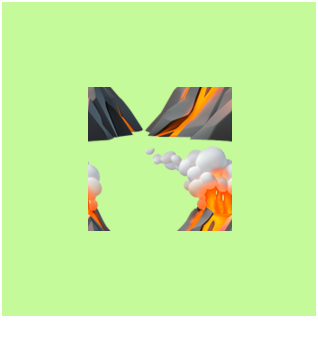
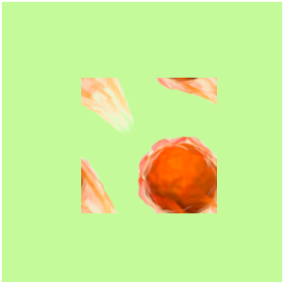

CLIMATE IMAGES LOCATION MAP is a website-based map tool dedicated to exploring climate issues through the layer of visual images all over the world. We will evaluate the misuse of the locations of images that exist in the online environment.
1\Prologue
The project on this website is a part of the Final Synthesis Studio of the Master's Degree in Communication Design course based on Politecnico di Milano.
The image resources originated from ClimateVisuals.org, which is one of the most trustful, evidence-based online climate images library. We did a image reverse search* (We use the reverse image search engine such as tineye.com, lens.google to discover a particular image’s results include the total number of using times and the specific URL of each frequence) on multiple images from this platform to analyse the using situation and originated location behind each image.
The aim of this website is to let the audiences understand the misuse of informations that exist online when publishing those images into different platforms.
Here is the example:
The project on this website is a part of the Final Synthesis Studio of the Master's Degree in Communication Design course based on Politecnico di Milano.
The image resources originated from ClimateVisuals.org, which is one of the most trustful, evidence-based online climate images library. We did a image reverse search* (We use the reverse image search engine such as tineye.com, lens.google to discover a particular image’s results include the total number of using times and the specific URL of each frequence) on multiple images from this platform to analyse the using situation and originated location behind each image.
The aim of this website is to let the audiences understand the misuse of informations that exist online when publishing those images into different platforms.
Here is the example:
An Australian image used to depict a forest fire was used in an Abuja-based Nigerian online newspaper and was incorrectly used to depict the arrest of four people in Morocco on suspicion of arson.
In the meantime, we decided to guide them through the location map to track the climate issues behind those images and the use of images in different countries. And this are our context pages to help the audiences understand how to use this tool.
2\Data Progress
#Step 1
As we mentioned, our images have all been collected from ClimateVisuals.org using the keyword “Climate Change” as the search criteria. We collectedclimate images documented by various platforms from countries.
#Step 1
As we mentioned, our images have all been collected from ClimateVisuals.org using the keyword “Climate Change” as the search criteria. We collectedclimate images documented by various platforms from countries.
This list is showing the images that we collected in the first stage on ClimateVisual platform.
#Step 2
Then, we used the image reverse search* method (We use the reverse image search engine such as tineye.com, lens.google to discover a particular image’s results include the total number of using times and the specific URL of each frequence) to collect the frequency of use for each image and then selected the most usedimages over the 5images from ClimateVisuals. And images that we show on this website, which are effective in representing the information and situations in usage through various platforms and countries.
#Step 3
In this step, we named different climate images using a prefix number and letters to arrange those images in different located countries.

Over the next stage, we used green and orange colour to categorised the using situations of images in which the online platforms used to correctly or incorrectly describe the locations. To express the messages of using situations to be more
clear and readable.
For example:
For example:
Map in Green - The Originated Location
Map in Orange - The Wrong Location
#Step 4
In the meantime, we encouraged the audiences can be able to understand the story behind each climate image and the using situations based on it through some simple online interaction.
We contributed this website as an online location map tool to help audiences gather various information based on different images by “clicking” the location on the map.
Map in Orange - The Wrong Location
#Step 4
In the meantime, we encouraged the audiences can be able to understand the story behind each climate image and the using situations based on it through some simple online interaction.
We contributed this website as an online location map tool to help audiences gather various information based on different images by “clicking” the location on the map.
3\Team
CLIMATE IMEGES LOCATION MAP was brought to you by 7 communication design students from Politecnico di Milano, who were obsessed with searching around for all kinds of information on climate change images, meanwhile fretting about making website.
CLIMATE IMEGES LOCATION MAP was brought to you by 7 communication design students from Politecnico di Milano, who were obsessed with searching around for all kinds of information on climate change images, meanwhile fretting about making website.
Li Ye
Lin Ran

Zhong Yiheng
Lucrezia
Spapperi Gestri
Spapperi Gestri
Sun Litong

Gao Yijia
Li Manman